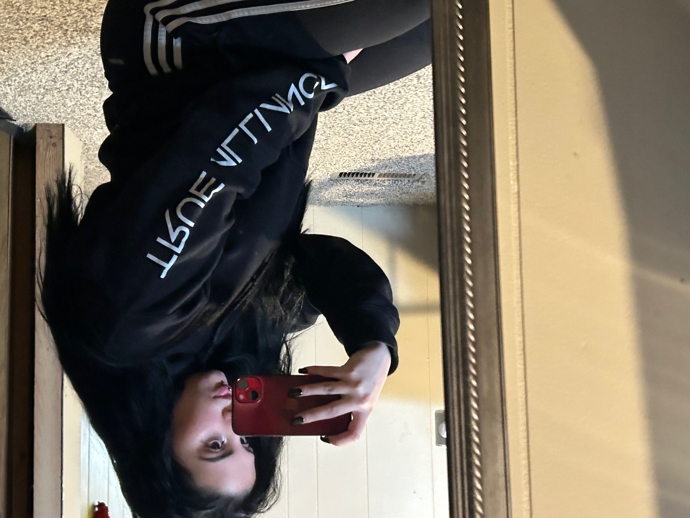

About
Creative direction rooted in identity and energy.
I am Gavlin Barlow, creative lead and marketing manager for True Alliance LLC, and a continuing student designer at PPSC. My work focuses on building visuals that feel bold, clean, and connected to real communities.
I approach design through research, concept development, visual testing, and revision. My goal is to create work that looks professional while still carrying identity, energy, and purpose.
Resume and LinkedIn
Add your resume PDF and LinkedIn URL here before publishing.